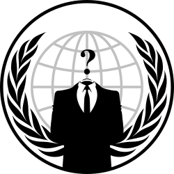

Anonymous - az ismeretlen híresség
Az Anonymous egy laza, decentralizált közösség, amelyet nehéz egyetlen szervezett csoportként definiálni. Nem rendelkezik hivatalos vezetőkkel, tagsággal vagy központi struktúrával — az „anonymous” sokak által használt gyűjtőnév arra, amikor különböző emberek közös célokért együtt lépnek fel. Külső megjelenésében ikonikus a Guy Fawkes-álarc, amely a kollektíva népszerű vizuális jelképe lett; ez az anonimitás és az egység szimbóluma.
Tevékenységeik többsége az online térhez kötődik: kampányok, tiltakozások, információs akciók és — időnként — hacktivista műveletek. Az Anonymous gyakran áll ki a szólás- és sajtószabadság, az internet szabadsága és a korrupció elleni fellépés mellett; akcióik célpontjai változatosak lehetnek, kormányok, nagyvállalatok vagy olyan intézmények, amelyeket az akció résztvevői igazságtalannak vagy elnyomónak ítélnek.
Fontos azonban megérteni a kettősséget: míg sokan hősiesnek tartják az ilyen akciókat a nyilvánosság és az elszámoltathatóság nevében, mások szerint az anonimitás és a szabályozatlanság jogi és etikai problémákat vet fel. Egyes akciók illegális formát öltenek (például adatlopás vagy szolgáltatásmegtagadás), ami következményekkel járhat az érintettek számára, és vitát generál a célszemélyek, ártatlan harmadik felek és a köz érdekének védelme között.
Összefoglalva: az Anonymous nem egy klasszikus szervezet, hanem egy eszme és egy eszköztár, amelyhez bárki csatlakozhat ötlettel vagy cselekvéssel. A név alatt megjelenő akciók sokszínűek — néhány cél altruista és közérdekű, mások viszont megkérdőjelezhetőek — ezért érdemes kritikusan és körültekintően szemlélni mind az indíttatást, mind a végrehajtás módját.